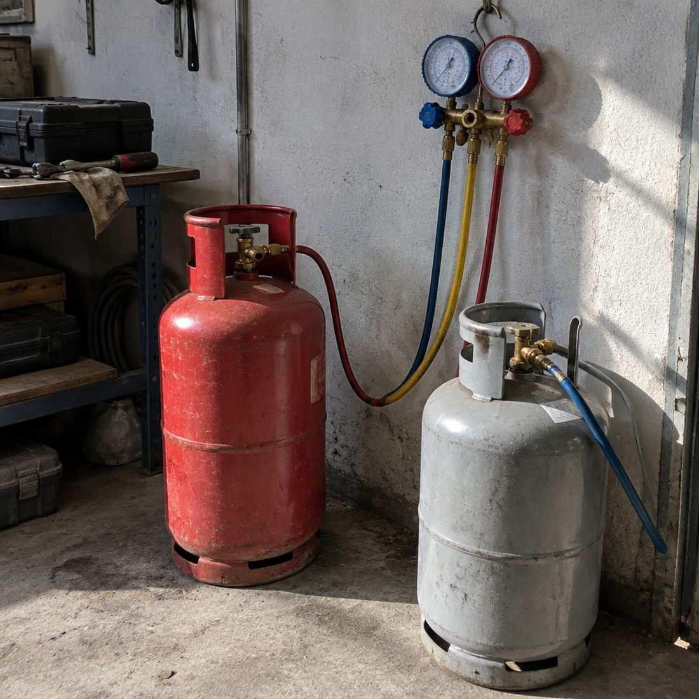

Заправка фреоном
по весу, а не «на глаз»
Все виды хладагентов, поиск утечки, вакуумирование контура. Дозаправка без устранения причины — выброшенные деньги.
Фреон не расходуется
Хладагент циркулирует в герметичном контуре. Если его стало меньше, значит есть утечка — в вальцовке, пайке, теплообменнике или золотнике клапана. Просто «дозаправить» такую систему значит вернуть проблему через месяц-два, а заодно дать компрессору поработать без масла.
Поэтому порядок такой: найти утечку, устранить, вакуумировать контур и заправить строго по весу, указанному на шильдике блока.
- Поиск утечки: обмыливание, течеискатель, опрессовка азотом
- Вакуумирование до нужного остаточного давления
- Заправка по весу с весами, а не «по манометру»
- Контроль перегрева и переохлаждения после заправки

Все виды фреонов в наличии под бытовую и коммерческую технику
Обмерзают трубки или внутренний блок
Это не «нормально при жаре». Это сигнал, что система работает неправильно.
Мало фреона
Давление падает, температура кипения уходит в минус, иней ползёт по трубке и испарителю. Требуется поиск утечки, а не только заправка.
Засор капилляра
Фильтр-осушитель или капиллярная трубка забились продуктами распада масла. Систему нужно промывать.
Плохой обдув
Грязный фильтр, слабый вентилятор, перекрытый поток. Испаритель не отдаёт холод — обмерзает.
С какими фреонами работаем
Подбираем по шильдику и модели, смешивать разные хладагенты нельзя.
Стоимость зависит от типа хладагента и объёма системы. Точную сумму называем после диагностики и проверки шильдика.
Три шага, без которых заправка бессмысленна
Каждый шаг подтверждается прибором, а не словами.
Поиск утечки
Визуальный осмотр трасс, обмыливание соединений, течеискатель, при необходимости опрессовка азотом.
Ремонт и вакуум
Устраняем утечку, меняем вальцовку или паяем, вакуумируем контур вакуумным насосом.
Заправка по весу
Заправляем ровно столько, сколько указано на шильдике, с контролем перегрева и токов.
Ушёл фреон? Сначала найдём утечку
Опишите, что происходит: обмерзание, слабый холод, свист или масляные пятна на соединениях. Подскажем по телефону и назовём время выезда.